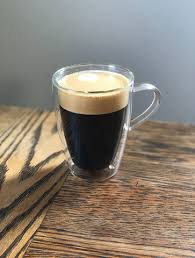

☕ Americano Yapım Rehberi

📖 Americano Hakkında Bilgiler
Americano, espresso özünün sıcak su ile seyreltilmesiyle elde edilen klasik bir kahve türüdür.
Filtre kahveye benzer bir yumuşaklığa sahip olsa da, espresso yöntemiyle hazırlandığı için daha yoğun aromalıdır.
İkinci Dünya Savaşı sırasında İtalya’daki Amerikan askerlerinin espressoyu sert bulup sıcak su eklemesiyle ortaya çıktığı söylenir.
🌟 Temel Özellikleri
- Genellikle 1 shot espressoya 2 ölçek sıcak su eklenerek hazırlanır.
- Filtre kahveye göre daha gövdeli, daha yoğun aromalıdır.
- Espresso suyun üzerine dökülürse kahvenin krema tabakası korunur.
🏠 Evde Kolay Americano Yapımı
Evde espresso makineniz yoksa, moka pot veya French press ile hazırlanan yoğun kahve özüyle oldukça başarılı bir Americano yapabilirsiniz.
📋 Adım Adım Hazırlanışı
- Fincanınıza yaklaşık 90-120 ml sıcak su doldurun.
-
Kahve özünü hazırlayın:
- Moka Pot ile yaklaşık 40-50 ml yoğun kahve hazırlayın.
- French Press ile yoğun kahve demleyebilirsiniz.


- Hazırladığınız yoğun kahveyi sıcak suyun üzerine yavaşça dökün.
☕ Küçük Tüyo:
Kahveyi suyun üzerine dökmek,
kahvenin üzerindeki krema tabakasını koruyarak
daha yumuşak bir içim sağlar.